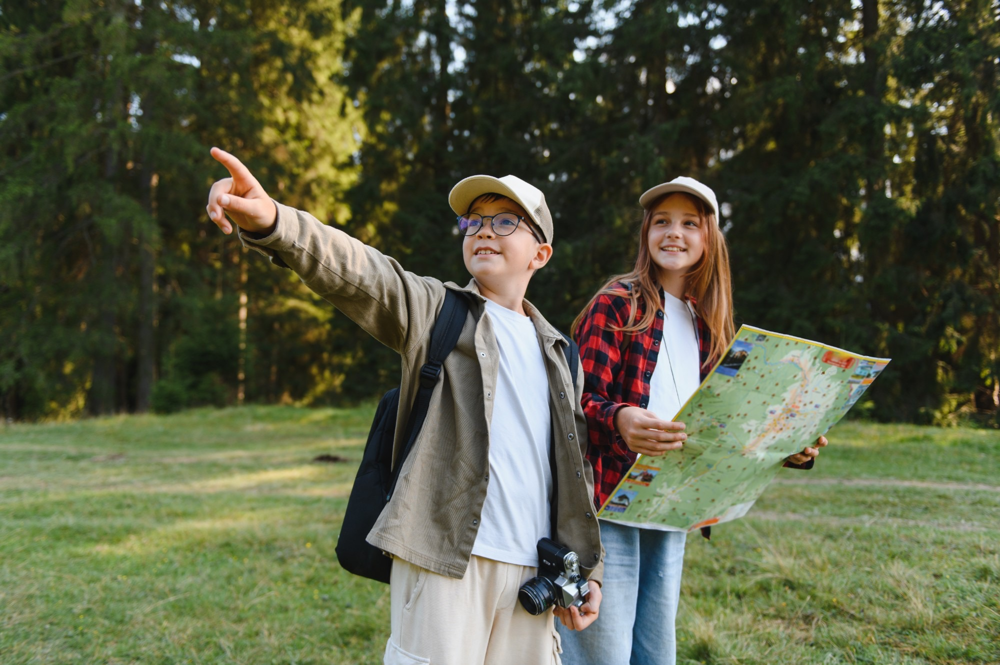
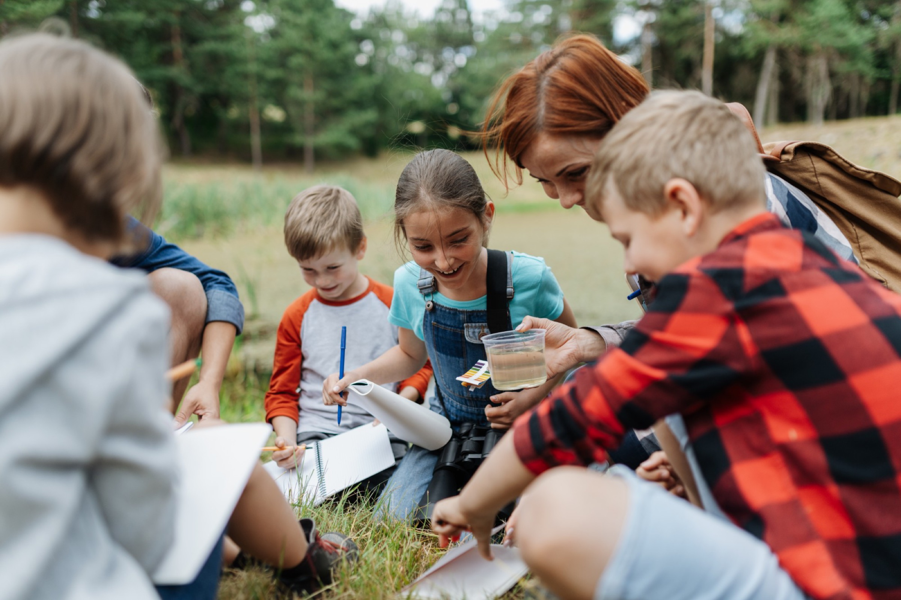
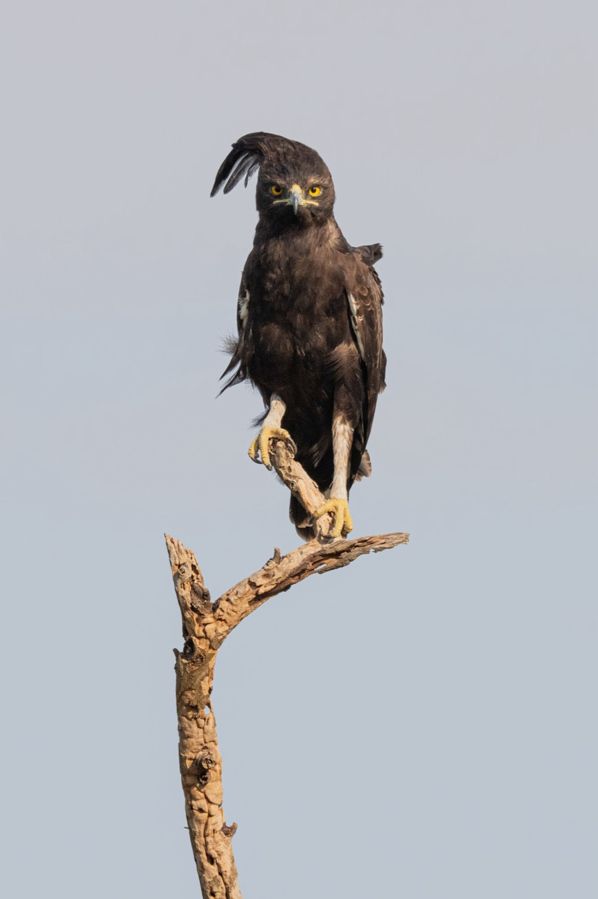
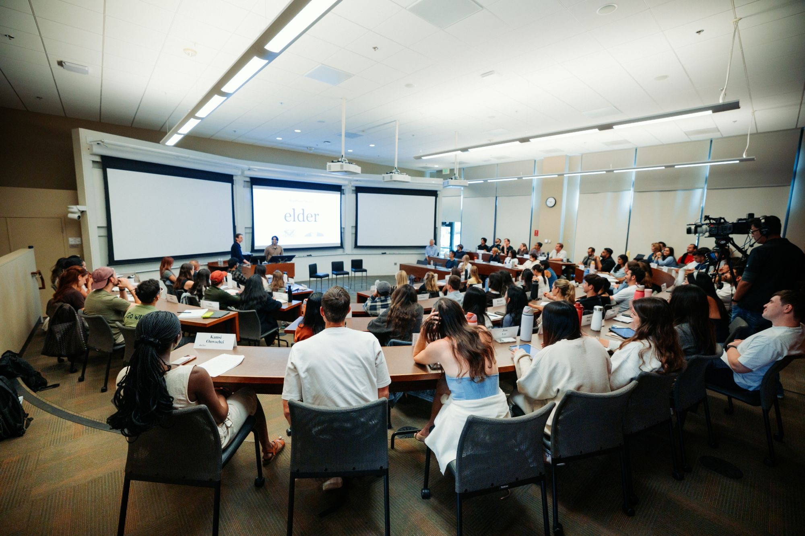
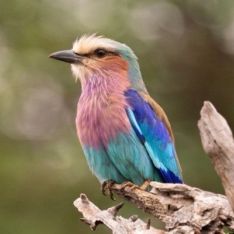
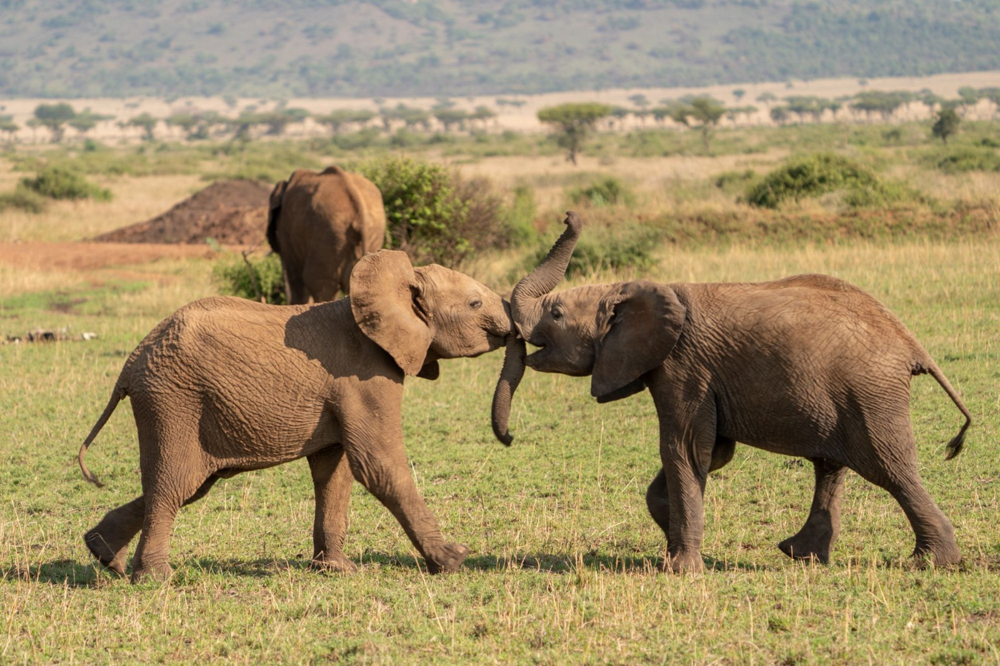
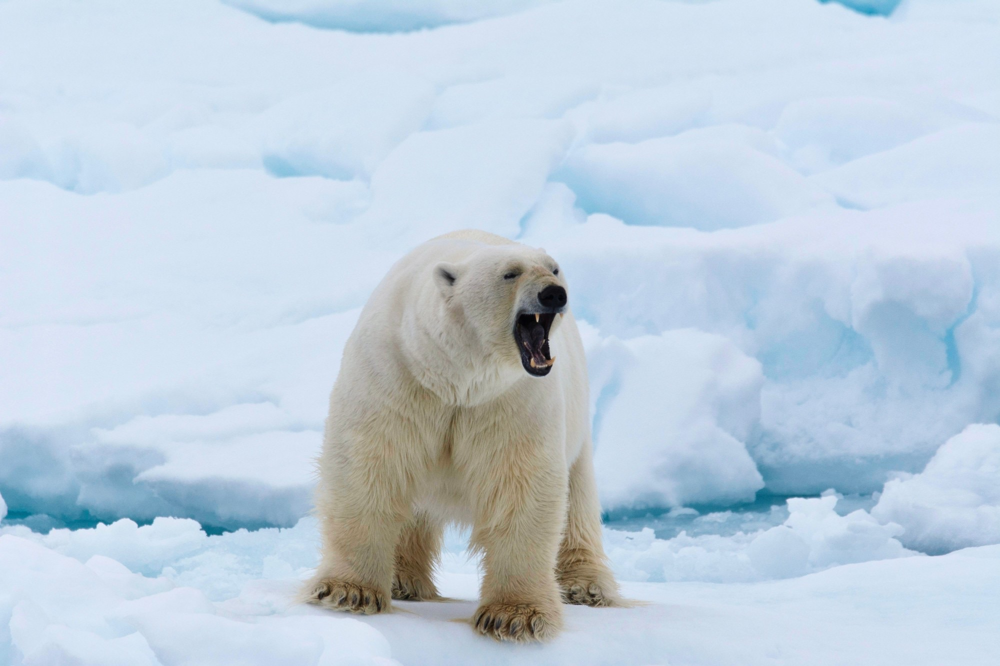

Support for a specific story
Help with the costs of making the work: fieldwork, production, editing or access to the right equipment.

Our work / In development
Two areas of focus: scholarships and mentorship for emerging wildlife storytellers, and free wildlife education for young people.
Two areas of focus

Scholarships, mentors and creative resources for aspiring wildlife photographers, filmmakers and creators.
See the program ↓
Free wildlife education, made with schools, educators and youth organizations.
See the program ↓
Focus area 1 / Emerging Storytellers Scholarship & Mentorship
Scholarships, mentorship and creative resources help aspiring wildlife photographers, filmmakers and creators develop their stories and share them. A small award can make a real difference. So can time with someone who knows how to turn an idea into a compelling video, photo story or live conversation.
We’re designing a small first cohort, pairing project support with experienced mentors. We’re especially interested in storytellers with local knowledge, a distinctive perspective and a clear subject they want people to understand.
The scholarship program is in development. Applications are not open. Award amounts, eligibility, selection and timing will be announced when confirmed.
What a scholarship includes
Help with the costs of making the work: fieldwork, production, editing or access to the right equipment.
Practical guidance from an experienced storyteller on the idea, the craft and making work for its audience.
Access to equipment, editing help and a clear plan to publish and share the finished work.
Storytelling partnerships
We’re also exploring a program that pairs emerging creators with scientists, researchers and people working in wildlife and wild places who could benefit from storytelling support.
Creators help document and share that work, gaining hands-on experience while bringing important research and projects to a wider audience.

Emerging creatorBrings the storytelling
Scientist or researcherBrings the knowledge
Focus area 2 / Wildlife Education & Outreach
We create free, accessible educational content about wildlife and the natural world.
We plan to partner with local schools, educators and youth organizations to bring these stories to younger audiences, in classrooms and in the places they already watch.
Schools and educators: get in touch ↗Wildlife and nature stories anyone can watch, read and use, with no paywall.
Working with local schools and teachers to bring these stories into classrooms.
Reaching young people through the groups and programs they already belong to.
How we’ll report our progress
As projects launch, we plan to report scholarships awarded, mentoring delivered, educational resources created and work published. We’ll also share available audience measures such as views, watch time and engagement.
Those figures tell us how stories are being seen. Where a project includes a school session or another direct activity, we’ll report participation and feedback separately. Learning and changes in behavior need their own evidence.
Who we supported and what they made.
Time spent with experienced storytellers.
Free materials created and shared with schools.
Work released and the audiences it reached.
Reported as programs launch. No programs have launched yet.
